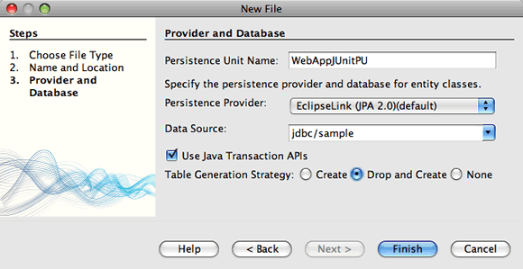

Apache NetBeans
Apache NetBeansLatest release
埋込みEJBコンテナを使用したエンタープライズ・アプリケーションのテスト
| This tutorial needs a review. You can open a JIRA issue, or edit it in GitHub following these contribution guidelines. |
このチュートリアルでは、Java EEエンタープライズ・アプリケーション用のJUnitテストを作成して実行する方法について説明します。このチュートリアルでは、エンティティ・クラスとセッションBeanを含むWebアプリケーションを作成します。最初に、セッションBean用のJUnitテスト・クラスを作成し、埋込みEJBコンテナでそのテストを実行します。次に、プロジェクトにエンティティ・クラスを追加し、テスト・クラスを変更してエンティティ・クラス用のテスト・メソッドを追加します。
チュートリアルの課題
このチュートリアルに従うには、次のソフトウェアとリソースが必要です。
| ソフトウェアまたはリソース | 必須バージョン |
|---|---|
7.2、7.3、7.4、8.0、Java EEバンドル版 |
|
バージョン7または8 |
|
GlassFish Server Open Source Edition |
3.1.xまたは4.x |
| このチュートリアルにはJUnitプラグインが必要です。IDEのインストール時にJUnitプラグインをインストールしなかった場合は、プラグイン・マネージャを開き、「使用可能なプラグイン」タブを選択してJUnitプラグインをインストールしてください。 |
前提条件
このドキュメントは、次のテクノロジについて基本的な知識またはプログラミング経験を持つ読者を想定して書かれています。
-
Javaプログラミング
-
NetBeans IDE
このチュートリアルを開始する前に、必要に応じて次のドキュメントをお読みください。
終了したプロジェクトのZIPアーカイブはダウンロードできます。
セッションBeanのテスト
この項では、セッションBeanとエンティティ・クラスを含む単純なJava EE Webアプリケーションを作成します。
プロジェクトの作成
-
メイン・メニューから「ファイル」>「新規プロジェクト」([Ctrl]-[Shift]-[N]、Macの場合は[⌘]-[Shift]-[N])を選択します。
-
「Java Web」カテゴリから「Webアプリケーション」を選択します。「次」をクリックします。
-
プロジェクト名を*WebAppJUnit*にし、プロジェクトの場所を設定します。
-
専用フォルダを使用するオプションが選択されている場合は選択を解除します。 「次」をクリックします。
-
サーバーを*「GlassFish Server」に設定し、「Java EEバージョン」を「Java EE 6 Web」または「Java EE 7 Web」*に設定します。 「終了」をクリックします。
-
セッションBeanの作成
この課題では、2つの数値を追加するメソッド1つを含む非常に単純なセッションBeanを作成します。
-
「プロジェクト」ウィンドウでWebAppJUnitプロジェクトを右クリックし、「新規」>「その他」を選択します。
-
「Enterprise JavaBeans」カテゴリで「セッションBean」を選択します。「次」をクリックします。
-
「EJB名」に「MyBean」と入力します。
-
「パッケージ名」に「bean」と入力します。
-
「セッションのタイプ」として「ステートレス」を選択します。「終了」をクリックします。
「終了」をクリックすると、新しいクラスがエディタに表示されます。
-
エディタで、クラスに以下のメソッド
addNumbersを追加します。
@Stateless
public class MyBean {
*public int addNumbers(int numberA, int numberB) {
return numberA + numberB;
}*
}
@LocalBean 注釈を追加したり、このチュートリアルでインタフェースを実装する必要はありません。ビューが明示的に指定されていない場合、デフォルトでは、インタフェースなしのビューが公開されます。
|
-
変更を保存します。
セッションBeanのテスト
この課題では、セッションBean用の、 addNumbers メソッドをテストするテスト・クラスを作成します。IDEでは、ターゲット・クラス内のメソッドに基づいて新しいテスト・クラスとスケルトン・テスト・メソッドを生成できます。
-
「プロジェクト」ウィンドウで
MyBeanクラスを右クリックし、「ツール」>「テストを作成」を選択します。 -
「フレームワーク」ドロップダウン・リストで「JUnit」を選択します。
-
「テストを作成」ダイアログ・ボックスのデフォルト値を使用します。「OK」をクリックします。

Figure 1. 「テストを作成」ダイアログ
| JUnit単体テストを初めて作成するときは、JUnitのバージョンを指定する必要があります。「JUnitのバージョンを選択」ダイアログ・ボックスで「JUnit 4.x」を選択し、「選択」をクリックします。 |
「OK」をクリックすると、IDEによって MyBeanTest.java ファイルが生成され、エディタでそのクラスが開かれます。
「プロジェクト」ウィンドウで、IDEによって「テスト・パッケージ」ノードの下にテスト・クラスが生成されたことを確認できます。デフォルトでは、 javax.ejb.embeddable.EJBContainer.createEJBContainer() をコールしてEJBコンテナ・インスタンスを作成するスケルトン・テスト・メソッドがIDEによってテスト・クラス内に生成されます。 createEJBContainer() メソッドは、EJB 3.1埋込み可能APIの一部である+ EJBContainer +クラス内のメソッドの1つです。
「プロジェクト」ウィンドウで「テスト・ライブラリ」ノードを展開すると、IDEによってGlassFish Server(埋込み可能コンテナ)とJUnit 4.xがテスト・ライブラリとして自動的に追加されたことを確認できます。GlassFish Serverライブラリを展開すると、ライブラリに glassfish-embedded-static-shell.jar が含まれていることを確認できます。

Figure 2. 「プロジェクト」ウィンドウに示されたプロジェクトの構造
glassfish-embedded-static-shell.jar JARには、埋込みEJBコンテナのソースは含まれていません。 glassfish-embedded-static-shell.jar JARには、GlassFishのローカル・インストールが必要です。ローカルのGlassFishインストールのクラスパスは、プロジェクトのターゲット・サーバーによって決定されます。ターゲット・サーバーは、プロジェクトの「プロパティ」ダイアログ・ボックスで変更できます。
|
-
生成されたスケルトン・テスト・メソッドを変更して、
numberA、numberBおよびexpResultの値を指定し、デフォルトのfailのコールを除去します。
@Test
public void testAddNumbers() throws Exception {
System.out.println("addNumbers");
*int numberA = 1;
int numberB = 2;*
EJBContainer container = javax.ejb.embeddable.EJBContainer.createEJBContainer();
MyBean instance = (MyBean)container.getContext().lookup("java:global/classes/MyBean");
*int expResult = 3;*
int result = instance.addNumbers(numberA, numberB);
assertEquals(expResult, result);
container.close();
}-
「プロジェクト」ウィンドウでプロジェクトを右クリックし、「テスト」を選択します。
テストを実行すると、IDEで「テスト結果」ウィンドウが開き、テストの進捗状況と結果が表示されます。

Figure 3. 「テスト結果」ウィンドウ
「出力」ウィンドウに次のような出力が表示されます。
Testsuite: bean.MyBeanTest
addNumbers
...
Tests run: 1, Failures: 0, Errors: 0, Time elapsed: 31.272 sec
------------- Standard Output ---------------
addNumbers
...
------------- ---------------- ---------------
test-report:
test:
BUILD SUCCESSFUL (total time: 35 seconds)コンテナのプロパティを指定するためのテストの変更
「テストを作成」ウィザードを使用したときに、IDEによってEJBコンテナを起動するためのコードを含むデフォルトのスケルトン・テスト・クラスが生成されました。この課題では、コンテナを起動する生成済のコードを変更して、埋込みコンテナ・インスタンスの追加のプロパティを指定できるようにします。
-
テスト・クラスに以下のコード(太字部分)を追加します。
@Test
public void testAddNumbers() throws Exception {
System.out.println("addNumbers");
int numberA = 1;
int numberB = 2;
// Create a properties map to pass to the embeddable container:
*Map<String, Object> properties = new HashMap<String, Object>();*
// Use the MODULES property to specify the set of modules to be initialized,
// in this case a java.io.File
*properties.put(EJBContainer.MODULES, new File("build/jar"));*
// Create the container instance, passing it the properties map:
EJBContainer container = javax.ejb.embeddable.EJBContainer.createEJBContainer(*properties*);
// Create the instance using the container context to look up the bean
// in the directory that contains the built classes
MyBean instance = (MyBean) container.getContext().lookup("java:global/classes/MyBean");
int expResult = 3;
// Invoke the addNumbers method on the bean instance:
int result = instance.addNumbers(numberA, numberB);
assertEquals(expResult, result);
// Close the embeddable container:
container.close();
}-
エディタを右クリックして「インポートを修正」([Alt]-[Shift]-[I]、Macの場合は[⌘]-[Shift]-[I])を選択し、
java.util.HashMapおよびjava.util.Map用のインポート文を追加します。 -
テストを再実行して、変更したテストが機能し、コンテナが正しく作成されることを確認します。
「テスト結果」ウィンドウの「再実行」ボタンをクリックできます。
@BeforeClass および @AfterClass 注釈の使用
この課題では、テスト・クラスを変更して、コンテナ・インスタンスを作成するメソッドと停止するメソッドを個別に作成します。これは、同じコンテナ・インスタンスを使用できる複数のテストを実行する場合に役に立つ場合があります。このようにすることで、コンテナ・インスタンスをテストごとに開いて閉じる必要がなくなり、かわりに、テストを実行する前に作成し、すべてのテストが完了した後で閉じるインスタンスを1つ作成します。
この課題では、EJBコンテナを作成するコードを setUpClass メソッドに移動します。 setUpClass メソッドには、そのメソッドが最初に(テスト・クラス内の他のメソッドより前に)実行されることを示すために使用される @BeforeClass 注釈が付いています。この例では、コンテナ・インスタンスが testAddNumbers テスト・メソッドの前に作成され、コンテナは停止されるまで存在します。
同様に、コンテナを停止するコードを @AfterClass 注釈が付いた tearDownClass メソッドに移動します。
-
テスト・クラスに以下のフィールドを追加します。
private static EJBContainer container;-
コンテナを作成するコードを
testAddNumbersテスト・メソッドからsetUpClassメソッドにコピーします。
@BeforeClass
public static void setUpClass() *throws Exception* {
*Map<String, Object> properties = new HashMap<String, Object>();
properties.put(EJBContainer.MODULES, new File("build/jar"));
container = EJBContainer.createEJBContainer(properties);
System.out.println("Opening the container");*
}-
コンテナを閉じるコードを
testAddNumbersテスト・メソッドからtearDownClassメソッドにコピーします。
@AfterClass
public static void tearDownClass() *throws Exception* {
*container.close();
System.out.println("Closing the container");*
}-
testAddNumbersから余分なコードを除去します。変更を保存します。
テスト・クラスは次のようになるはずです。
public class MyBeanTest {
private static EJBContainer container;
public MyBeanTest() {
}
@BeforeClass
public static void setUpClass() throws Exception {
Map<String, Object> properties = new HashMap<String, Object>();
properties.put(EJBContainer.MODULES, new File("build/jar"));
container = EJBContainer.createEJBContainer(properties);
System.out.println("Opening the container");
}
@AfterClass
public static void tearDownClass() throws Exception {
container.close();
System.out.println("Closing the container");
}
@Before
public void setUp() {
}
@After
public void tearDown() {
}
/**
* Test of addNumbers method, of class MyBean.
*/
@Test
public void testAddNumbers() throws Exception {
System.out.println("addNumbers");
int numberA = 1;
int numberB = 2;
// Create the instance using the container context to look up the bean
// in the directory that contains the built classes
MyBean instance = (MyBean) container.getContext().lookup("java:global/classes/MyBean");
int expResult = 3;
// Invoke the addNumbers method on the bean instance:
int result = instance.addNumbers(numberA, numberB);
assertEquals(expResult, result);
}
}コンテナの作成と停止が正しく行われることを確認するためにテストを再実行すると、「テスト結果」ウィンドウに以下のような出力が表示されます。

Figure 4. 「テスト結果」ウィンドウ
``addNumbers`` テストの前に ``setUpClass`` メソッドが実行され、「Opening the container」と表示されたことがわかります。
エンティティ・クラスのテスト
この項では、エンティティ・クラスと持続性ユニットを作成し、エンティティ・マネージャを注入してエンティティにアクセスするようにセッションBeanを変更します。新しいエンティティ・クラスには、エントリのID番号を出力に表示する単純なメソッドを追加します。次に、データベース内のエントリを作成および確認するための単純なメソッドをセッションBeanにいくつか追加します。
エンティティ・クラスの作成
この項では、新規エンティティ・クラス・ウィザードを使用して、データベース接続の詳細とともにエンティティ・クラスと持続性ユニットを作成します。
-
「プロジェクト」ウィンドウでWebAppJUnitプロジェクトを右クリックし、「新規」>「その他」を選択します。
-
「持続性」カテゴリで「エンティティ・クラス」を選択します。「次」をクリックします。
-
「クラス名」に「SimpleEntity」と入力します。
-
「パッケージ」ドロップダウン・リストから「bean」を選択します。
-
「主キー型」に「int」と入力します。「次」をクリックします。
-
デフォルトの持続性ユニット名と持続性プロバイダを使用します。
-
データ・ソースとして「
jdbc/sample」を選択し、戦略として「ドロップして作成」を選択します。「終了」をクリックします。

Figure 5. 「エンティティ・クラスの作成」ダイアログ
「終了」をクリックすると、新しいエンティティ・クラスがエディタに表示されます。「プロジェクト」ウィンドウの「構成ファイル」ノードを展開すると、持続性ユニット WebAppJUnitPU のプロパティを定義する persistence.xml ファイルがIDEによって自動的に生成されたことを確認できます。
-
エディタで、エンティティ・クラスに以下のprivateフィールドを追加します。
private String name;-
ソース・エディタ内を右クリックして「コードを挿入」([Alt]-[Insert]、Macの場合は[Ctrl]-[I])を選択し、「取得メソッドおよび設定メソッド」を選択して「取得メソッドおよび設定メソッドの生成」ダイアログ・ボックスを開きます。
-
ダイアログ・ボックスで「
name」フィールドを選択します。「生成」をクリックします。 -
クラスに以下のメソッドを追加します。
public SimpleEntity(int id) {
this.id = id;
name = "Entity number " + id + " created at " + new Date();
}-
@NamedQueriesおよびNamedQuery注釈を使用して名前付きSQL問合せを作成します。
@Entity
*@NamedQueries({@NamedQuery(name = "SimpleEntity.findAll", query = "select e from SimpleEntity e")})*
public class SimpleEntity implements Serializable {-
デフォルト・コンストラクタを作成します。
IDEでコンストラクタを自動生成する場合は、クラス宣言の横のガターに表示された提案アイコンをクリックできます。
-
インポートを修正して、
javax.persistence.NamedQueries、javax.persistence.NamedQueryおよびjava.util.Dateのインポート文を追加します。変更を保存します。
デフォルトで生成されるコードに加えて、エンティティ・クラスは次のようになるはずです。
package bean;
import java.io.Serializable;
import java.util.Date;
import javax.persistence.Entity;
import javax.persistence.GeneratedValue;
import javax.persistence.GenerationType;
import javax.persistence.Id;
import javax.persistence.NamedQueries;
import javax.persistence.NamedQuery;
@Entity
@NamedQueries({@NamedQuery(name = "SimpleEntity.findAll", query = "select e from SimpleEntity e")})
public class SimpleEntity implements Serializable {
private static final long serialVersionUID = 1L;
@Id
@GeneratedValue(strategy = GenerationType.AUTO)
private int id;
private String name;
public SimpleEntity() {
}
public String getName() {
return name;
}
public void setName(String name) {
this.name = name;
}
public SimpleEntity(int id) {
this.id = id;
name = "Entity number " + id + " created at " + new Date();
}
...
}セッションBeanの変更
この課題では、 MyBean セッションBeanを編集して、データベース表のデータを挿入および取得するためのメソッドを追加します。
-
エディタで
MyBean.javaを開きます。 -
エディタ内を右クリックして「コードを挿入」([Alt]-[Insert]、Macの場合は[Ctrl]-[I])を選択し、ポップアップ・メニューから「エンティティ・マネージャの使用」を選択します。
「エンティティ・マネージャの使用」を選択したときに、エンティティ・マネージャを注入するためにIDEによってクラスに以下のコードが追加されました。持続性ユニットの名前が自動的に生成されていることがわかります。
@PersistenceContext(unitName="WebAppJUnitPU")
private EntityManager em;-
以下の
verifyおよびinsertメソッドを追加します。
@PermitAll
public int verify() {
String result = null;
Query q = em.createNamedQuery("SimpleEntity.findAll");
Collection entities = q.getResultList();
int s = entities.size();
for (Object o : entities) {
SimpleEntity se = (SimpleEntity)o;
System.out.println("Found: " + se.getName());
}
return s;
}
@PermitAll
public void insert(int num) {
for (int i = 1; i <= num; i++) {
System.out.println("Inserting # " + i);
SimpleEntity e = new SimpleEntity(i);
em.persist(e);
}
}-
javax.persistence.Queryをインポートするようにインポートを修正し、変更内容を保存します。
エンティティ・クラスのテスト
この課題では、テスト・クラスを編集して、アプリケーションがEJBを検索すること、および insert メソッドと verify メソッドが正常に動作することをテストするメソッドを追加します。
-
JavaDBデータベースを起動します。
-
エディタで
MyBeanTest.javaテスト・クラスを開きます。 -
テスト・クラスを編集して、以下の
testInsertテスト・メソッドを追加します。
@Test
public void testInsert() throws Exception {
// Lookup the EJB
System.out.println("Looking up EJB...");
MyBean instance = (MyBean) container.getContext().lookup("java:global/classes/MyBean");
System.out.println("Inserting entities...");
instance.insert(5);
int res = instance.verify();
System.out.println("JPA call returned: " + res);
System.out.println("Done calling EJB");
Assert.assertTrue("Unexpected number of entities", (res == 5));
System.out.println("..........SUCCESSFULLY finished embedded test");
}-
「プロジェクト」ウィンドウでプロジェクト・ノードを右クリックし、ポップアップ・メニューから「テスト」を選択します。
「テスト結果」ウィンドウが開き、以下のような出力が表示されます。

Figure 6. testInsertテストを追加した後の「テスト結果」ウィンドウ
テスト・クラスに追加された出力メッセージから、テストの進捗状況とテストの実行順序がわかります。
これで、セッションBean用のテストが完成し、エンティティ・クラスの接続が機能することがわかったので、アプリケーションのWebインタフェースのコーディングを開始できます。
ソリューション・プロジェクトのダウンロード
次の方法で、このチュートリアルにソリューションをプロジェクトとしてダウンロードできます。
-
終了したプロジェクトのZIPアーカイブをダウンロードします。
-
次の手順を実行して、プロジェクト・ソースをNetBeansのサンプルからチェックアウトします。
-
メイン・メニューから「チーム」>「Subversion」>「チェックアウト」を選択します。
-
「チェックアウト」ダイアログ・ボックスで次のリポジトリURLを入力します。
https://svn.netbeans.org/svn/samples~samples-source-code「次」をクリックします。-
「参照」をクリックして「リポジトリ・フォルダを参照」ダイアログ・ボックスを開きます。
-
ルート・ノードを展開し、*samples/javaee/WebAppJUnit*を選択します。「OK」をクリックします。
-
ソースのローカル・フォルダを指定します(ローカル・フォルダは空である必要があります)。
-
「終了」をクリックします。
-
-
「終了」をクリックすると、IDEではローカル・フォルダがSubversionリポジトリとして初期化され、プロジェクト・ソースがチェックアウトされます。
-
チェックアウトが完了するときに表示されるダイアログで、「プロジェクトを開く」をクリックします。
| ソースをチェックアウトするには、Subversionクライアントが必要です。Subversionのインストールの詳細は、NetBeans IDEでのSubversionガイドのSubversionの設定の項を参照してください。 |
関連項目
NetBeans IDEを使用したJava EEアプリケーションの開発方法の詳細は、次のリソースを参照してください。
EJB 3.1エンタープライズBeanの使用方法については、Java EE 6チュートリアルを参照してください。
nbj2eeメーリング・リストに登録することによって、NetBeans IDE Java EE開発機能に関するご意見やご提案を送信したり、サポートを受けたり、最新の開発情報を入手したりできます。